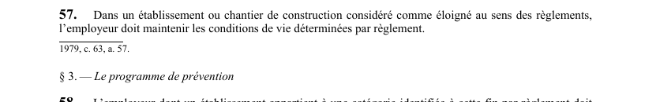

art-57-LSST : conditions vie établissement éloigné
Un article du wiki ⚖️ Recueil législatif
En bref
Dans un établissement ou chantier de construction considéré comme éloigné au sens des règlements, l'employeur doit maintenir les conditions de vie déterminées par règlement. Il s'agit d'une obligation.
- Établissement ou chantier considéré comme éloigné au sens des règlements.
🌐 LegisQuébec · 📄 PDF officiel (page 18)
Texte officiel : capture du PDF
{kind=link}

Toucher l'image pour l'agrandir🔗 Ouvrir a cette page : LSST.pdf : page 18 · texte a jour au 26 mars 2024
Voir aussi
- art. 55 : avis ouverture fermeture établissement · obligation : lorsqu'un employeur prend possession d'un établissement, il doit transmettre à la Commission un avis d'ouverture selon les délais et modalités prévus par règlement ; lorsqu'il quitte l'établissement, il doit de même transmettre un avis de fermeture.
- art. 56 : obligations du propriétaire d'édifice · obligation : le propriétaire d'un édifice utilisé par au moins un employeur doit faire en sorte que, dans les parties qui ne sont pas sous l'autorité d'un employeur, les mesures nécessaires pour protéger la santé et assurer la sécurité des travailleurs soient prises.
- art. 58 : programme prévention propre établissement · obligation : l'employeur dont l'établissement appartient à une catégorie identifiée par règlement doit faire en sorte qu'un programme de prévention propre à cet établissement soit mis en application, compte tenu des responsabilités du comité de santé et de sécurité.
- art. 59 : contenu du programme de prévention · obligation : un programme de prévention a pour objectif d'éliminer à la source même les dangers pour la santé, la sécurité et l'intégrité physique et psychique des travailleurs ; il doit notamment contenir des programmes d'adaptation, des mesures de surveillance, des normes d'hygiène.
- ↑ Loi : LSST
Pages qui pointent ici (4)
- art-55-LSST : avis ouverture fermeture établissement Recueil législatif
- art-56-LSST : obligations du propriétaire d'édifice Recueil législatif
- art-58-LSST : programme prévention propre établissement Recueil législatif
- art-59-LSST : contenu du programme de prévention Recueil législatif